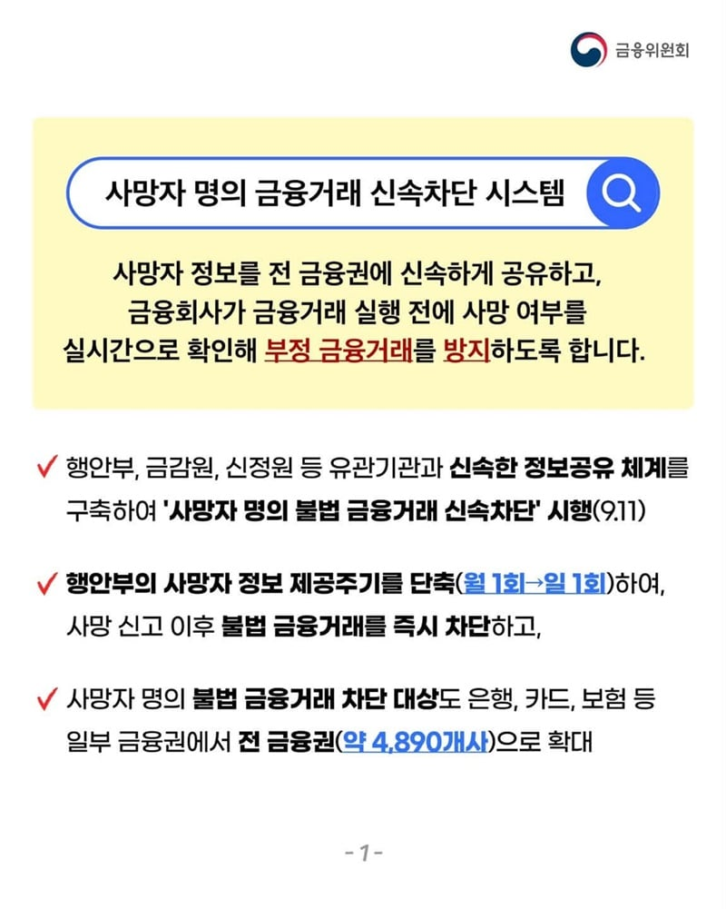
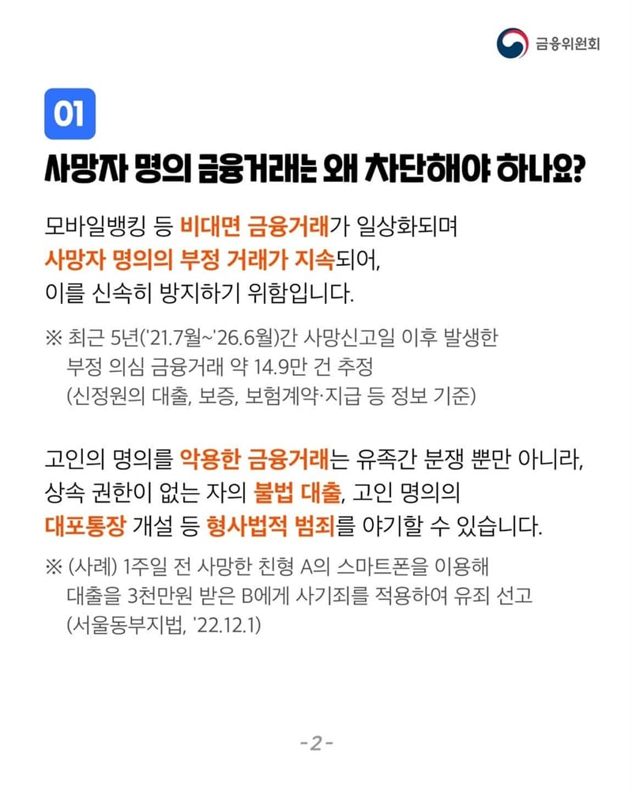
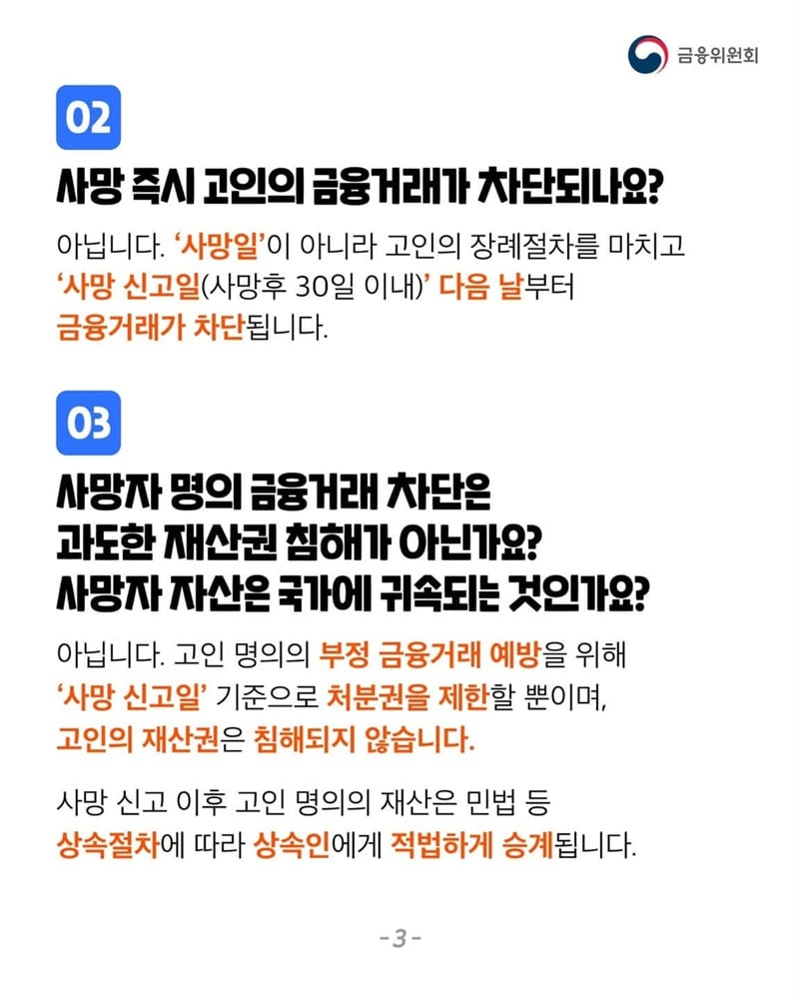
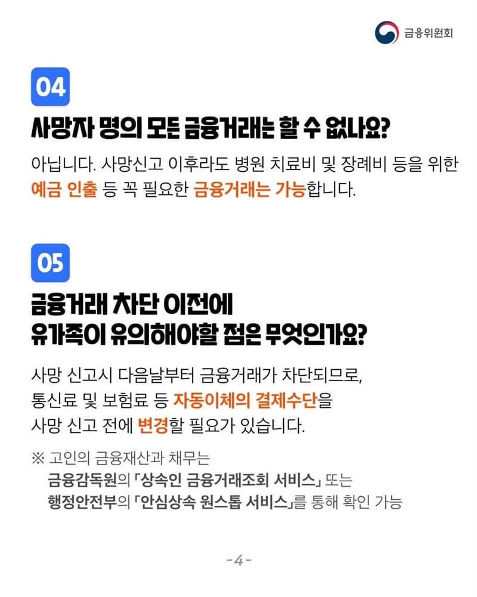

개드립 내용 : https://www.dogdrip.net/723784514




출처 : https://www.korea.kr/multi/visualNewsView.do?newsId=148971552
시행하는 이유 : 사망신고를 해도 금융회사로 사망 사실이 곧바로 전달되지 않았음.
기존 : 사망자 정보공유 월 1회, 은행 및 일부 금융회사, 차단시점 - 금융회사가 사망 사실을 직접 확인한 다음
변경 이후 : 사망자 정보공유 매일 1회, 전 금융권 약 4,890개사, 차단시점 - 사망신고 다음날부터
즉 바뀌는게 아니라 금융권에 전달하는 속도와 범위를 개선한거임.
모르는 개붕이들 많을거 같아서 빠르게 올림.
본문 사족 호들갑 보니까 선동 느낌이긴했음